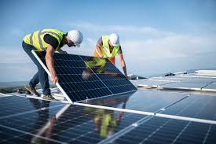
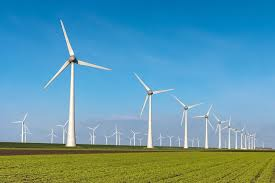
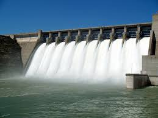
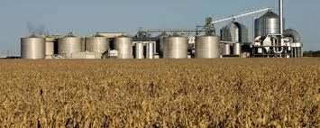
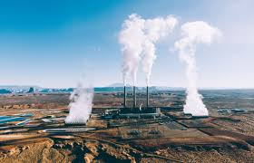
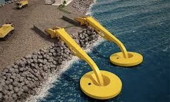

Tipos de Energia Renovável
☀️ Energia Solar
Essa fonte de energia é renovável e limpa, uma vez que possui ampla disponibilidade, além de gerar baixo impacto ambiental. Seu funcionamento dá-se por meio da transformação da energia térmica proveniente do Sol.
🌬️ Energia Eólica
A energia eólica é aquela obtida a partir da força do vento. O processo de extração é realizado principalmente graças ao rotor (que transforma a energia cinética em energia mecânica) e ao gerador (que transforma dita energia mecânica em elétrica).
💧 Energia Hidroelétrica
A energia hidrelétrica é uma fonte de energia renovável que transforma a força da água em eletricidade. É obtida através do aproveitamento de quedas d'água, rios ou represas. A força da água movimenta turbinas que acionam geradores.
🌾 Energia Biomassa
É uma fonte de energia renovável que vem de matéria orgânica, como restos de plantas, animais e resíduos. É uma alternativa aos combustíveis fósseis, que poluem e não são renováveis.
🌋 Energia Geotérmica
A energia geotérmica permite a utilização do calor do interior da terra para obter eletricidade, água quente e calefação, oferecendo uma alternativa aos combustíveis fósseis.
🌊 Energia Oceânica
A energia dos oceanos consiste na energia elétrica gerada através da força das águas do mar. A tecnologia mais utilizada para esta captação são as turbinas submersas de eixo horizontal. É uma energia limpa que pode ser obtida através das marés ou das ondas dos mares.
Empresas que atuam em cada tipo:
- Solfácil – Financiamento e instalação de sistemas solares no Brasil.
- Engie – Multinacional francesa com grande atuação em energia solar e eólica no Brasil.
- Renovigi – Fabricante e distribuidora nacional de kits fotovoltaicos.
- Serena Energia – Empresa brasileira líder em geração de energia eólica.
- Voltalia – Multinacional com projetos de energia renovável, especialmente eólica e solar.
- Eletrobras – Principal geradora de energia hidrelétrica no Brasil.
- CTG Brasil – Companhia de origem chinesa, atua com foco em usinas hidrelétricas.
- Raízen – Empresa brasileira que atua fortemente em bioenergia a partir de cana-de-açúcar.
- Orplana – Representa produtores de cana e promove geração energética por biomassa.
- Enel Green Power – Atua com energia renovável, incluindo geotérmica em outros países.
- Wello – Empresa finlandesa que desenvolve geradores a partir da energia das ondas.
- Eco Wave Power – Empresa israelense especializada em geração de energia oceânica.